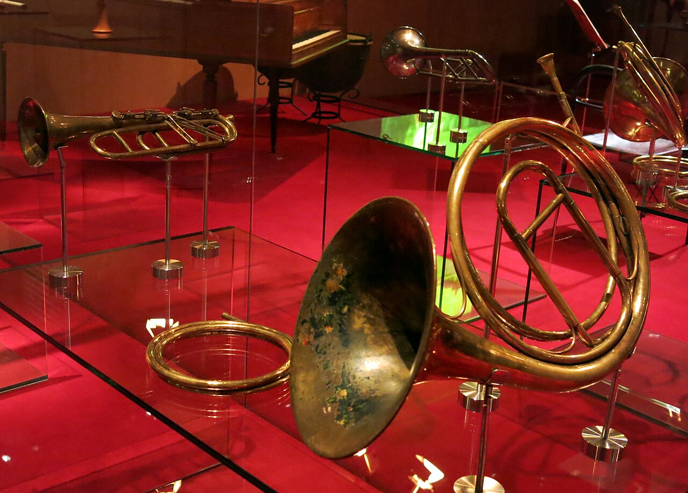

Музыка · 37-бөлім · Аспап топтары Music · Section 37 · Instrument Families Музыка · Раздел 37 · Группы инструментов
🎼 Оркестр аспаптарының топтары
🎼 The Families of the Orchestra
🎼 Группы инструментов оркестра
Симфониялық оркестр аспаптары дыбыс шығару тәсілі бойынша топтарға бөлінеді. The instruments of a symphony orchestra are divided into families by how they produce sound. Инструменты симфонического оркестра делятся на группы по способу извлечения звука.
🎻 Оркестрдің бес тобы 🎻 The Five Families of the Orchestra 🎻 Пять групп оркестра
Симфониялық оркестр аспаптары дыбыс шығару тәсілі бойынша топтарға бөлінеді. Әр топтың өзіндік тембрі бар. The instruments of a symphony orchestra are divided into families by the way they produce sound. Each family has its own timbre. Инструменты симфонического оркестра делятся на группы по способу извлечения звука. У каждой группы свой тембр.
ІшектіStringsСтрунные
Ағаш үрмеліWoodwindДеревянные
Мыс үрмеліBrassМедные
СоқпалыPercussionУдарные
ПернеліKeyboardКлавишные
💡 Топ — бұл дыбысты бірдей тәсілмен шығаратын аспаптар отбасы: біреулері ішекпен, басқалары ауамен, ал кейбіреулері соққымен дыбыстайды. 💡 A family is a group of instruments that make sound in the same way: some with strings, others with air, and some by being struck. 💡 Группа — это семья инструментов, которые рождают звук одинаковым способом: одни — струной, другие — воздухом, а некоторые — ударом.
📊 Топтар, дыбыстау тәсілі, мысалдар 📊 Families, How They Sound, Examples 📊 Группы, как звучат, примеры
| ТопFamilyГруппа | Қалай дыбыстайдыHow it soundsКак звучит | МысалдарExamplesПримеры |
|---|---|---|
| 🎻 Ішекті ысқышты🎻 Bowed strings🎻 Струнные смычковые | ысқышты ішекпен жүргізуa bow drawn across the stringsзвук смычком по струнам | скрипка, альт, виолончель, контрабас (оркестр негізі)violin, viola, cello, double bass (the core of the orchestra)скрипка, альт, виолончель, контрабас (основа оркестра) |
| 🎶 Ағаш үрмелі🎶 Woodwind🎶 Деревянные духовые | ауаны үрлеуblowing air inвдувание воздуха | флейта, гобой, кларнет, фаготflute, oboe, clarinet, bassoonфлейта, гобой, кларнет, фагот |
| 🎺 Мыс үрмелі🎺 Brass🎺 Медные духовые | мундштукта ерін діріліlips vibrating in a mouthpieceвибрация губ в мундштуке | труба, валторна, тромбон, тубаtrumpet, French horn, trombone, tubaтруба, валторна, тромбон, туба |
| 🥁 Соқпалы🥁 Percussion🥁 Ударные | соққыa strike (hit)удар | литавр, барабан, тарелка, ксилофон, үшбұрышtimpani, drum, cymbals, xylophone, triangleлитавры, барабан, тарелки, ксилофон, треугольник |
| 🎹 Пернелі🎹 Keyboard🎹 Клавишные | пернелерkeysклавиши | фортепиано, орган, челеста (кейде)piano, organ, celesta (sometimes)фортепиано, орган, челеста (иногда) |


🎧 Әр топтың тембрін тыңдаңыз 🎧 Hear Each Family's Timbre 🎧 Услышать тембр каждой группы
🎧 батырманы басып, әр топтың тембрін салыстырыңыз tap a button and compare each family's timbre нажмите кнопку и сравните тембр каждой группы
💡 Бірдей биіктік (ля¹ = 440 Гц) әр топта басқаша естіледі. Ал соқпалы аспаптарда көбіне биіктігі жоқ қысқа дыбыс — соққы. 💡 The same pitch (A4 = 440 Hz) sounds different in each family. And percussion often makes a short sound with no pitch — a strike. 💡 Одна и та же высота (ля¹ = 440 Гц) звучит в каждой группе по-разному. А ударные часто дают короткий звук без высоты — удар.